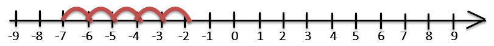
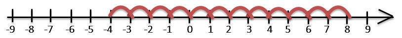
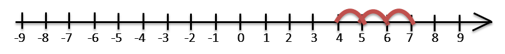
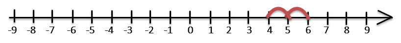
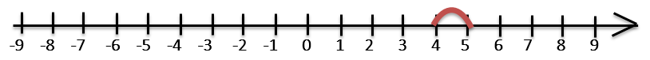
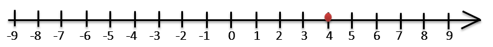
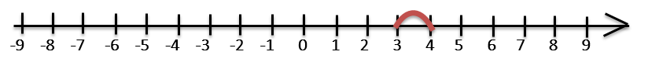
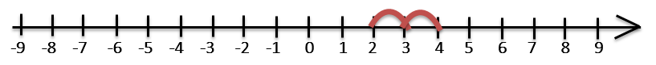

Liczby ujemne
Pewnego słonecznego popołudnia Jaś spacerował polną dróżką z koszykiem jabłek w ręce. Gdzieś w krzakach przycisnął go mały głód. Spojrzał żałobnie na dwa lśniące w słońcu jabłka wewnątrz koszyka… Czymże są dwa jabłka w obliczu Jasiowego apetytu? W końcu ścisk w żołądku nie dał za wygraną. Jaś zjadł trzy jabłka. Ile jabłek zostało w koszyku?
Intuicje
W temacie o odejmowaniu dość niechętnie wypowiadaliśmy się na temat brawurowych prób odejmowania większej liczby od mniejszej. Jako że w matematyce nie ma rzeczy niemożliwych, pora sprostać takiemu wyzwaniu. Liczby ujemne służą do przedstawiania wartości mniejszych niż $0$. Liczba $-1$ (czyt. minus jeden) ma wartość o $1$ mniejszą niż zero, $-2$ to dwa poniżej zera itd. Jeśli rozszerzymy pojęcie liczb naturalnych o liczby ujemne, dostaniemy dość pokaźną kolekcję:
$…$, $-12$, $-11$, $-10$, $-9$, $-8$, $-7$, $-6$, $-5$, $-4$, $-3$, $-2$, $-1$, $0$, $1$, $2$, $3$, $4$, $5$, $6$, $7$, $8$, $9$, $10$, $11$, $12$, $…$
Możemy dopisywać kolejne liczby po lewej i po prawej stronie tak długo, jak chcemy.
Z liczbami ujemnymi najczęściej spotykamy się, odczytując temperaturę na termometrze.
- Przy $40°C$ umiera się z gorąca.
- Przy $30°C$ narzeka się na upał i wzywa majstra od klimatyzacji.
- Przy $20°C$ jest komfortowo, ale nikt nie zwraca na to uwagi.
- Przy $10°C$ robi się chłodno i ludzie marudzą, że lato się kończy.
- Przy $0°C$ narzeka się na mróz. Woda ma dość, więc zamarza.
- Przy $-10°C$ ludzie marudzą, że w pięciu warstwach ubrania jest niewygodnie.
- Przy $-20°C$ umiera się z zimna.
Intuicje
Zarówno liczb dodatnich (na prawo od zera) jak i liczb ujemnych (na lewo od zera) jest nieskończenie wiele. Liczby ujemne, zero i liczby dodatnie nazywamy wspólnie liczbami całkowitymi.
Kreska stojąca przed liczbami ujemnymi to symbol „minus” - taki sam, jakiego używamy przy odejmowaniu liczb. Jego rolą jest określenie znaku liczby - każda liczba w matematyce jest dodatnia, ujemna albo jest zerem. Czasami liczby ujemne wraz z zerem obejmuje się mianem niedodatnie, a liczby dodatnie wraz z zerem nazywa się nieujemnymi.
Liczby, które różnią się tylko znakiem, nazywamy przeciwnymi.
- Liczby $2$ i $-2$ to liczby przeciwne
- Liczby $2372783$ i $-2372783$ to liczby przeciwne
- Liczba 0 jest przeciwna sama do siebie (0 i 0 to ta sama liczba)
Jeśli zaniedbamy znak, liczby przeciwne będą takie same. Mówimy, że liczby przeciwne są równe co do wartości bezwzględnej. Wartość bezwzględna liczby (nazywana czasem modułem liczby) to jej wartość z pominięciem znaku. Symbolicznie zapisujemy ją za pomocą dwóch pionowych kresek:
- Wartość bezwzględna liczby $-10$ wynosi $10: |-10|=10$
- Wartość bezwzględna liczby $6$ wynosi $6: |6|=6$
- Wartość bezwzględna liczby $0$ wynosi $0: |0|=0$
Intuicje
Liczby całkowite dobrze się prezentują na osi liczbowej:
Dzięki niej łatwo uzmysłowić sobie istotę dodawania i odejmowania liczb.
Przypuśćmy, że chcemy dodać liczby $3$ i $5$. Nasze pytanie brzmi „Jeśli do liczby $3$ dodamy $5$, ile otrzymamy?”. Oś liczbowa zwraca odpowiedź: znajdujemy na osi liczbowej trójkę, a następnie skaczemy o $5$ pozycji w prawo i lądujemy na ósemce.
Podobnie, gdybyśmy chcieli wykonać odejmowanie $6 - 4$, zaczęlibyśmy od liczby $6$, przeskoczyli o $4$ pozycje w lewo i skończyli na dwójce.
Podobnie rzecz się ma w przypadku liczb ujemnych.
-
$-7 + 5 = -2$
 -
$8 - 12 = -4$

Zastanówmy się, co gdyby chcieć dodać do $4$ liczbę $-2$. Możemy skorzystać z przemienności dodawania, by otrzymać
$$ 4 + (-2) = -2 + 4 = 2 $$Liczbę $-2$ zapisaliśmy w nawiasie, ponieważ $4 +-2$ wygląda głupio. Liczby ujemne zapisujemy w nawiasie, jeśli przed nimi stoi jakiś znak działania. Po znaku równości oraz na początku działania można zapisać liczbę ujemną bez nawiasu.
Powyższe działanie możemy ugryźć inaczej: na osi liczbowej zaczynamy od czwórki i przesuwamy się o $-2$ pozycji w prawo… tylko co to znaczy? Zauważmy pewne tendencje:
-
$4 + 3 = 7$
 -
$4 + 2 = 6$
 -
$4 + 1 = 5$
 -
$4 + 0 = 4$
 -
$4 + (-1) = 3$
 -
$4 + (-2) = 2$

Rzeczywiście: przeskakiwanie o $-2$ pozycje w prawo jest tym samym, co przeskakiwanie o dwie pozycje w lewo. A przecież przeskakiwanie w lewo symbolizuje odejmowanie.
$$ 4 + (-2) = 4 - 2 = 2 $$To dość ogólna zasada: dodawanie liczby ujemnej jest równoważne odejmowaniu liczby do niej przeciwnej. Występujące obok siebie $+$ i $-$ zwykle można zastąpić pojedynczym minusem.
Zastanówmy się jeszcze nad odejmowaniem liczby ujemnej. Działanie $5 - (-3)$ możemy rozumieć jako „przesunięcie piątki o $-3$ pozycje w lewo”, a więc „przesunięcie piątki o $3$ pozycje w prawo”
$$ 5 - (-3) = 5 + 3 = 8 $$Odejmowanie liczby ujemnej jest równoważne dodawaniu liczby do niej przeciwnej. Dwa znaki $-$ występujące obok siebie możemy zastąpić pojedynczym znakiem $+$.
Intuicje
Mnożenie to po prostu wielokrotne dodawanie. Działanie $5 \cdot (-2)$ możemy interpretować jako
$$ (-2) + (-2) + (-2) + (-2) + (-2) = -10 $$Jeśli tylko jeden z czynników jest ujemny, sprawa nie jest skomplikowana. Jak jednak rozumieć działanie
$(-3) \cdot (-2)$ ?
Wyobraźmy sobie kolejne wielokrotności liczby $-2$
Ponownie okazuje się, że podwójny minus daje plus:
$$ (-3) \cdot (-2) = 6 $$Dzielenie liczb ujemnych wygląda podobnie. Skoro
$$ 5 \cdot (-2) = (-2) + (-2) + (-2) + (-2) + (-2) = -10 $$to
$$ (-10) : 5 = -2 $$a także
$$ (-10) : (-2) = 5 $$Działania na liczbach ujemnych przebiegają właściwie tak samo jako działania na liczbach dodatnich. Trzeba jedynie uważać na znaki.
- Jeśli w mnożeniu lub dzieleniu obydwa elementy są dodatnie, wynik będzie dodatni.
- Jeśli w mnożeniu lub dzieleniu tylko jeden element jest ujemny, wynik będzie ujemny.
- Jeśli w mnożeniu lub dzieleniu obydwa elementy są ujemne, wynik będzie dodatni.
Warto mieć na uwadze raczej intuicyjną regułę, że „dwa minusy dają plus”, a „jeden minus i jeden plus dają minus”.